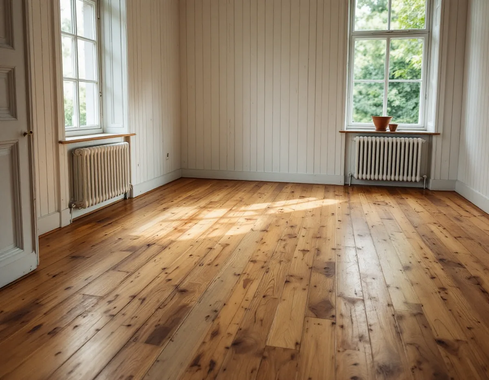
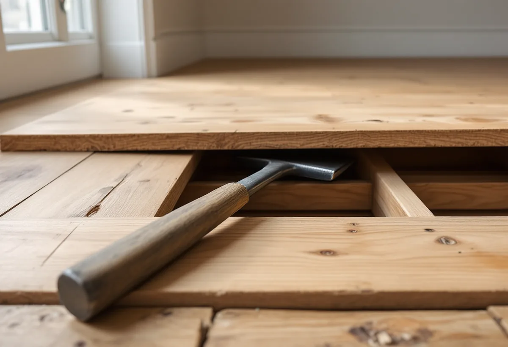
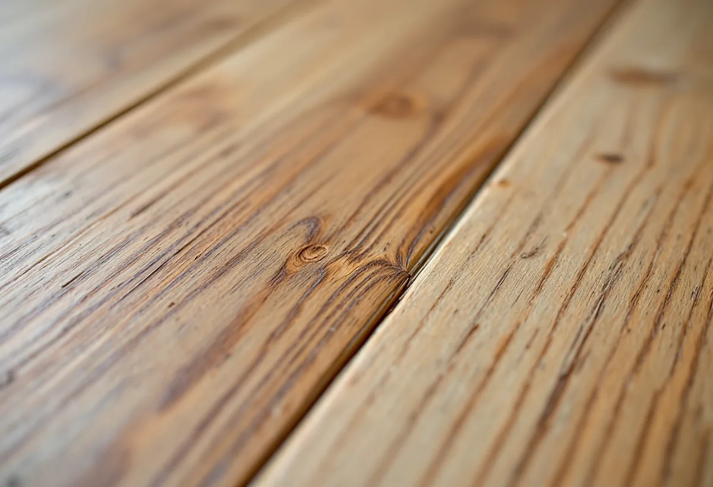

Platsbesök
Vi ser på brädorna, springorna och tidigare behandling.
I Spångas äldre villor ligger ibland de breda brädgolven kvar från byggåret, bucklig efter hundra år och med springor som växlar med årstiderna. Geal Entreprenad AB slipar, sicklar och lagar golv i villorna i Solhem, Bromsten och Flysta och hjälper dig att välja hur mycket av patinan som ska vara kvar.

Stadens vägledning Varsam utveckling av småhus- och villaområden beskriver hur Spånga på 1910-talet fick status som municipalsamhälle, och hur villastäderna fick fritt liggande hus på stora trädgårdstomter om 1 500–3 000 kvadratmeter. När nya planer togs fram under 1930-talet gjordes tomterna mindre, 700–1 000 kvadratmeter. I Solhem fick bara en tiondel av tomten bebyggas.
Villastäderna var privat organiserade och bebyggelsen består enligt vägledningen i huvudsak av individuellt utformade enfamiljshus med trä som dominerande fasadmaterial. Stadens områdesfakta för 2025 räknar 1 946 småhus med äganderätt i Solhem. Vägledningen beskriver hur villastäderna successivt har förtätats med nya hus, men i de äldre husen kan originalgolven finnas kvar under senare mattor eller lager av färg.

En läsare frågade Svenska Byggnadsvårdsföreningen hur man renoverar buckliga originalgolv från början av 1900-talet med stora springor och rester av färg och fernissa. Svaret var att golvet sannolikt är av hög kvalitet och bör sparas. Med ett brytjärn för golv går det ofta att demontera brädorna försiktigt, och ibland kan de vändas och läggas tillbaka, helst med kärnsidan uppåt. Vid omläggningen kan brädorna bankas ihop så att springorna minskar, och då kan det behövas en bräda i samma tjocklek i ytterkanten.
Föreningen varnar för att lägga golvet för tajt, eftersom träet rör sig med årstiderna: springorna är stora på senvintern och små på sensommaren. Ett enklare alternativ är att limma i smala lister i springorna och handhyvla dem till golvnivå. Ska golvet läggas om helt finns mer under golvläggare i Spånga.
Gammal färg och fernissa kan enligt Byggnadsvårdsföreningen normalt sicklas bort. Är tiljorna tjocka går det att slipa, men då försvinner patinan och en del av historien. Hyvling ger enligt föreningen en vackrare och mer motståndskraftig yta, men handhyvling är ett grannlaga arbete.
I ett annat svar, om lackade och slitna furugolv i ett trähus från 1904, föreslår föreningen att en slipning eller helst en sickling kan vara en kompromiss, och att hantverksmässigt lagade skador kan ge en extra dimension. Vi lägger fram alternativen för dig och provar på en mindre yta innan hela rummet tas.
Golvbranschens riktlinjer SLIP 22 säger att golvet inte ska ytbehandlas när luftfuktigheten inomhus ligger utanför 30–60 procent eller när fuktkvoten i trät ligger utanför 6–10 procent. Problemet är enligt riktlinjerna inte luftfuktigheten i sig utan variationerna, som kan ge sprickor i spacklade fogar.
I en gammal villa med stora springor tar vi därför hänsyn till årstiden. Lagar vi springor med lister gör vi det när golvet varken är som mest hopkrympt eller som mest svällt, och vi mäter fukten innan lack, olja eller såpa kommer på. Mer om tjänsten finns under golvläggning.

Vi ser på brädorna, springorna och tidigare behandling.
Sickling eller slipning provas på en liten yta.
Lyftning, lagning och slipning var för sig.
Brädor lyfts, vänds eller bankas ihop där det behövs.
Så skonsamt som golvet tillåter.
Efter fuktmätning, med såpa, olja eller lack.
Skatteverket räknar slipning av golv som rotarbete i ett småhus som du äger och använder som bostad. Är huset yngre än fem år får arbetet bara återställa det ursprungliga skicket.
Avdraget är högst 30 procent av arbetskostnaden, som mest 50 000 kronor per person och år, och rot och rut får tillsammans vara högst 75 000 kronor. Material och resor ger inget avdrag. Geal drar avdraget direkt på fakturan.
Golvytan, om brädorna ska lyftas och läggas om, springor och lagningar, om färg eller fernissa ska sicklas bort och vilken ytbehandling du väljer. Efter ett gratis platsbesök får du ett skriftligt kostnadsförslag.
Parkett, trägolv, klinker och slipning.
Golvläggning i Stockholm →Takbyte, takbesiktning och plåtarbeten.
Takläggare i Spånga →Solhem, Bromsten, Flysta och Sundby.
Takrenovering i Spånga →Solhem, spåren och de stora tomterna.
Attefallshus i Spånga →Äldre villor, duschplats och bostadsanpassning.
Badrumsrenovering i Spånga →Riva och bygga nytt hus.
Byggföretag i Spånga →Bättra eller måla om hela villan.
Fasadmålning i Spånga →Trävillor och gruppbyggda radhus.
Fasadrenovering i Spånga →Villor, verandor och nya öppningar.
Fönsterbyte i Spånga →Villorna i Solhem.
Fönsterrenovering i Spånga →Massivt, lamell, fanér eller laminat.
Golvläggare i Spånga →Solhem, villastäder och kök i flera lager.
Köksrenovering i Spånga →Solhems färgskala och villorna kring stationen.
Målare i Spånga →Villatak, rännor och stuprör.
Plåtslagare i Spånga →Väggar, vindar och verandor i villastäderna.
Snickare i Spånga →Solceller, radarn och Solhem.
Takbyte i Spånga →Tapet som passar husets tid.
Tapetsering i Spånga →Villastäderna, tomterna och gatan.
Tillbyggnad i Spånga →Villastäderna, stommen och ventilationen.
Totalrenovering i Spånga →